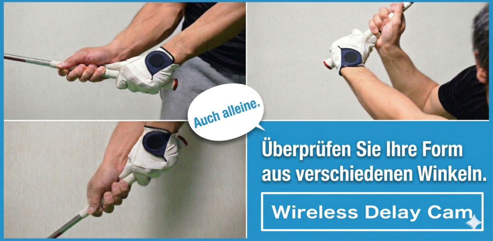
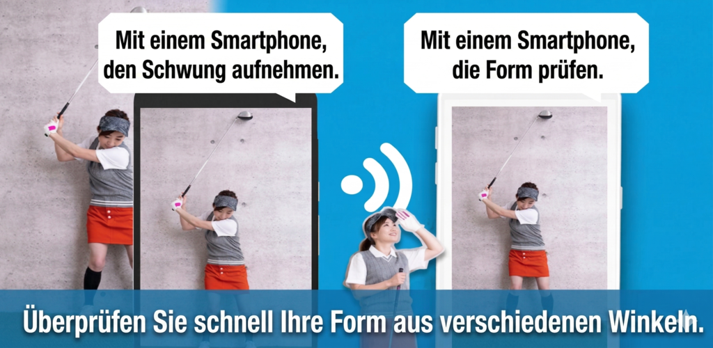
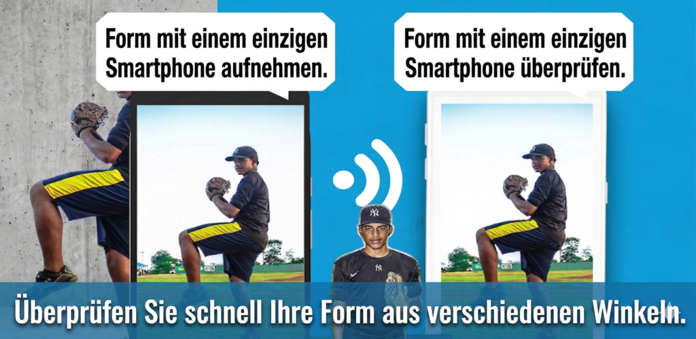
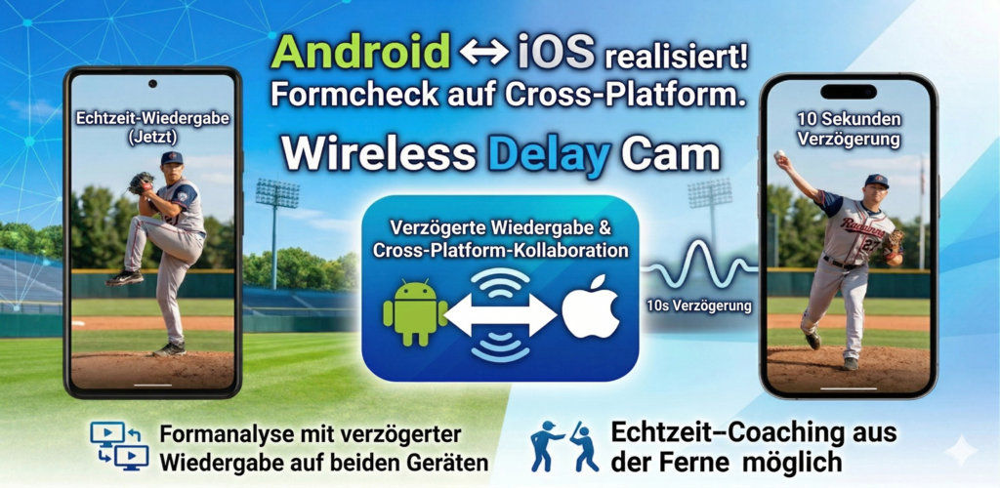

Laeuft auf unterschiedlichen Betriebssystemen
Verwenden Sie ein iPhone als Kamera und ein Android-Geraet als Monitor oder umgekehrt. Die App ist fuer gemischte Geraetekombinationen ausgelegt.
Plattformuebergreifende drahtlose Videouebertragung
Wireless Delay Cam verbindet Kamera- und Anzeigegeraete ueber iOS und Android hinweg. Live-Video laesst sich drahtlos im selben WLAN oder ueber Tethering uebertragen und per automatischer Erkennung oder QR-Code schnell koppeln.


Funktionen
Verwenden Sie ein iPhone als Kamera und ein Android-Geraet als Monitor oder umgekehrt. Die App ist fuer gemischte Geraetekombinationen ausgelegt.
Ein Router ist nicht notwendig. Sobald ein Geraet ein Tethering-Netz bereitstellt, koennen Kamera und Anzeigegeraet beitreten und streamen.
Das Anzeigegeraet kann im selben Netzwerk automatisch gefunden werden, was die Einrichtung vor Ort deutlich beschleunigt.
Scannen Sie den QR-Code des Anzeigegeraets auf der Kameraseite, um ohne manuelle Netzwerkeingabe zu koppeln.
Auf der Empfangsseite kann die Latenz gesetzt werden, wenn zeitversetztes Monitoring, Vergleiche oder Praesentationseffekte benoetigt werden.
Die Empfangsseite unterstuetzt Zoom, Spiegelung und Aufnahme. Auch auf der Senderseite kann der Stream gespeichert werden.
Ablauf
Starten Sie ein Geraet als Kamera und das andere als Anzeigeeinheit.
Nutzen Sie die automatische Erkennung im selben WLAN oder koppeln Sie sofort per QR-Code.
Passen Sie Latenz, Bitrate und Ausrichtung auf der Empfangsseite an Ihren Einsatzzweck an.
Beobachten Sie das eingehende Video und verwenden Sie bei Bedarf Aufnahme- oder Zoom-Funktionen.
Screens


Einsatz
Nehmen Sie mit einem Geraet auf und pruefen Sie das Bild auf einem anderen, auch wenn beide unterschiedliche Betriebssysteme nutzen.
Fuegen Sie gezielt Latenz hinzu, um Bewegungen zu vergleichen, Demos zu zeigen oder visuelle Effekte zu erzeugen.
Erstellen Sie ohne Spezialhardware eine leichte Monitoring-Umgebung, wenn vor Ort sowohl iOS- als auch Android-Geraete vorhanden sind.
FAQ
Nein. Eine externe Internetverbindung ist nicht noetig, solange beide Geraete sich im selben WLAN- oder Tethering-Netzwerk erreichen koennen.
Nein. Die App unterstuetzt sowohl automatische Erkennung als auch QR-Kopplung, sodass Sie je nach Situation die schnellere Methode waehlen koennen.
Ja. Die App ist fuer plattformuebergreifende Kombinationen ausgelegt, bei denen Sender und Empfaenger auf unterschiedlichen mobilen Betriebssystemen laufen.
Ja. Sowohl Sender als auch Empfaenger verfuegen ueber Optionen zum Speichern des Streams, die bei Bedarf aktiviert werden koennen.